Testing Material: Testing_Simple_TLM
Up: Testing Material
Contents
- Methodology
- Test Case 1A: MATLODE_ERK_TLM_Integrator (Default)
- Test Case 1B: MATLODE_ERK_TLM_Integrator
- Test Case 2A: MATLODE_RK_TLM_Integrator (Default)
- Test Case 2B: MATLODE_RK_TLM_Integrator
- Test Case 2C: MATLODE_RK_TLM_Integrator
- Test Case 3A: MATLODE_ROS_TLM_Integrator (Default)
- Test Case 3B: MATLODE_ROS_TLM_Integrator
- Test Case 4A: MATLODE_SDIRK_TLM_Integrator (Default)
- Test Case 4B: MATLODE_SDIRK_TLM_Integrator
- Test Case 4C: MATLODE_SDIRK_TLM_Integrator
The tangent linear test cases make ose of the following ODE test problem.
Ode_Function = @vanDerPol_Function; Ode_Jacobian = @vanDerPol_Jacobian; Ode_Hess_vec = @vanDerPol_Hess_vec; Tspan = [0; 20 ]; y0 = [2; -0.66];
We first generate a reference solution using MATLAB's built in ODE integrator ode45.
Option_Ref = odeset('AbsTol', 1e-12, 'RelTol', 1e-12); [T_Ref, Y_Ref] = ode45(Ode_Function,Tspan,y0,Option_Ref); Sens_Ref = [0.1084443916E+01 0.3618905872E-01; 0.7020197127E-01 0.2342715214E-02];
Methodology
In order not overwhelm the reader with very many test cases, we only demonstrate selecting the most common parameters in MATLODE®. For all ODE solvers in MATLODE® tangent linear package, we perform an absolute and relative tolerance sweep using the built in default ODE option struct denoted by 'A' in the section title. Additionally we perform a second absolute and relative tolerance sweep, denoted by 'B', changing the method used in the integrator. When applicable, the direct sensivity option parameter is toggled denoted by 'C' followed by an absolute and relative tolerance sweep.
Test Case 1A: MATLODE_ERK_TLM_Integrator (Default)
Description: Running MATLODE_ERK_TLM_Integrator with different absolute and relative tolerance values given default option struct.
Option = MATLODE_OPTIONS('Jacobian',Ode_Jacobian,'Y_TLM',eye(max(size(y0)))); [steps, errorSolution, errorSensitivity ] = TEST_General_Sensitivity(@MATLODE_ERK_TLM_Integrator,Ode_Function,Tspan,y0,Option,-11,-4,T_Ref,Y_Ref,Sens_Ref); figure(1); loglog(steps,errorSolution); title('Van Der Pol (Solution)'); ylabel('RMS Relative Error'); xlabel('Number of Steps'); figure(2); a = loglog(steps,errorSensitivity); title('Van Der Pol (Sensitivity)'); ylabel('RMS Relative Error'); xlabel('Number of Steps');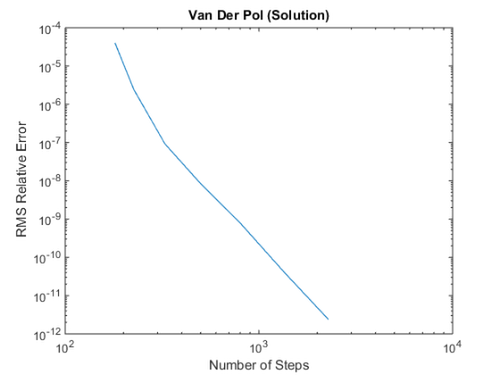 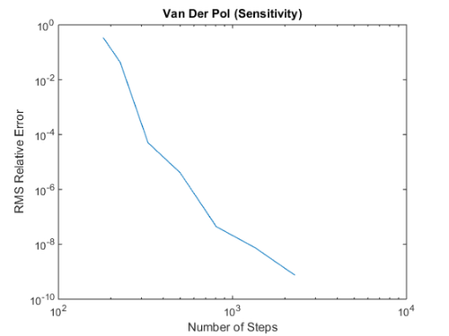
Test Case 1B: MATLODE_ERK_TLM_Integrator
Description: Running MATLODE_ERK_TLM_Integrator with different absolute and relative tolerance values given alternative coefficients.
Option = MATLODE_OPTIONS('Jacobian',Ode_Jacobian,'Y_TLM',eye(max(size(y0))),'Method',3); [steps, errorSolution, errorSensitivity ] = TEST_General_Sensitivity(@MATLODE_ERK_TLM_Integrator,Ode_Function,Tspan,y0,Option,-11,-4,T_Ref,Y_Ref,Sens_Ref); figure(1); loglog(steps,errorSolution); title('Van Der Pol (Solution)'); ylabel('RMS Relative Error'); xlabel('Number of Steps'); figure(2); loglog(steps,errorSensitivity); title('Van Der Pol (Sensitivity)'); ylabel('RMS Relative Error'); xlabel('Number of Steps');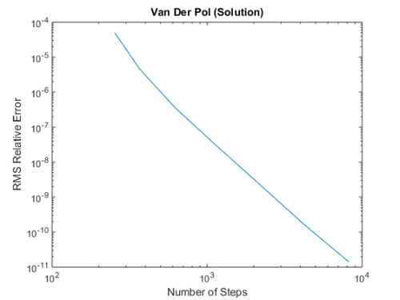 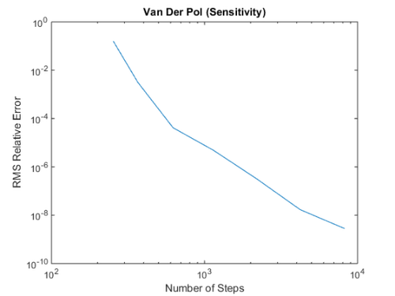
Test Case 2A: MATLODE_RK_TLM_Integrator (Default)
Description: Running MATLODE_RK_TLM_Integrator with different absolute and relative tolerance values given default option struct.
Option = MATLODE_OPTIONS('Jacobian',Ode_Jacobian,'Y_TLM',eye(max(size(y0)))); [steps, errorSolution, errorSensitivity ] = TEST_General_Sensitivity(@MATLODE_RK_TLM_Integrator,Ode_Function,Tspan,y0,Option,-10,-4,T_Ref,Y_Ref,Sens_Ref); figure(1); loglog(steps,errorSolution); title('Van Der Pol (Solution)'); ylabel('RMS Relative Error'); xlabel('Number of Steps'); figure(2); loglog(steps,errorSensitivity); title('Van Der Pol (Sensitivity)'); ylabel('RMS Relative Error'); xlabel('Number of Steps');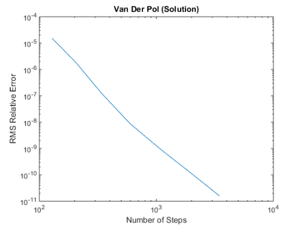 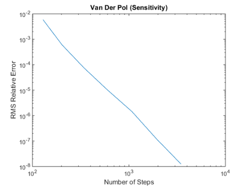
Test Case 2B: MATLODE_RK_TLM_Integrator
Description: Running MATLODE_RK_TLM_Integrator with different absolute and relative tolerance values given alternative coefficients.
Option = MATLODE_OPTIONS('Jacobian',Ode_Jacobian,'Y_TLM',eye(max(size(y0))),'Method',1); [steps, errorSolution, errorSensitivity ] = TEST_General_Sensitivity(@MATLODE_RK_TLM_Integrator,Ode_Function,Tspan,y0,Option,-10,-4,T_Ref,Y_Ref,Sens_Ref); figure(1); loglog(steps,errorSolution); title('Van Der Pol (Solution)'); ylabel('RMS Relative Error'); xlabel('Number of Steps'); figure(2); loglog(steps,errorSensitivity); title('Van Der Pol (Sensitivity)'); ylabel('RMS Relative Error'); xlabel('Number of Steps');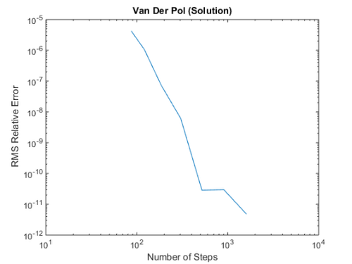 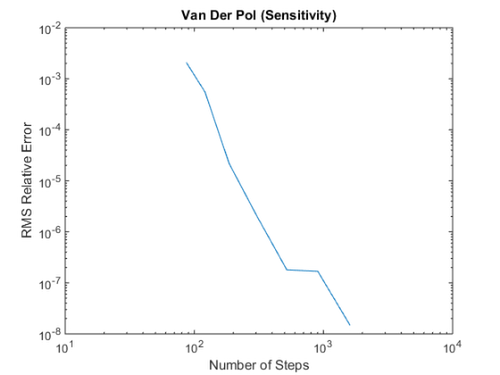
Test Case 2C: MATLODE_RK_TLM_Integrator
Description: Running MATLODE_RK_TLM_Integrator with different absolute and relative tolerance values given nondirect sensitivity analysis.
Option = MATLODE_OPTIONS('Jacobian',Ode_Jacobian,'Y_TLM',eye(max(size(y0))),'DirectTLM',false); [steps, errorSolution, errorSensitivity ] = TEST_General_Sensitivity(@MATLODE_RK_TLM_Integrator,Ode_Function,Tspan,y0,Option,-10,-4,T_Ref,Y_Ref,Sens_Ref); figure(1); loglog(steps,errorSolution); title('Van Der Pol (Solution)'); ylabel('RMS Relative Error'); xlabel('Number of Steps'); figure(2); loglog(steps,errorSensitivity); title('Van Der Pol (Sensitivity)'); ylabel('RMS Relative Error'); xlabel('Number of Steps');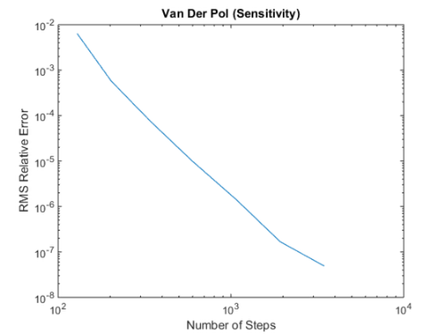
Test Case 3A: MATLODE_ROS_TLM_Integrator (Default)
Description: Running MATLODE_ROS_TLM_Integrator with different absolute and relative tolerance values given default option struct.
Option = MATLODE_OPTIONS('Jacobian',Ode_Jacobian,'Y_TLM',eye(max(size(y0))),'Hess_vec',Ode_Hess_vec); [steps, errorSolution, errorSensitivity ] = TEST_General_Sensitivity(@MATLODE_ROS_TLM_Integrator,Ode_Function,Tspan,y0,Option,-10,-4,T_Ref,Y_Ref,Sens_Ref); figure(1); loglog(steps,errorSolution); title('Van Der Pol (Solution)'); ylabel('RMS Relative Error'); xlabel('Number of Steps'); figure(2); loglog(steps,errorSensitivity); title('Van Der Pol (Sensitivity)'); ylabel('RMS Relative Error'); xlabel('Number of Steps');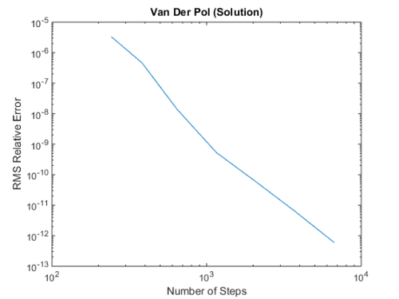 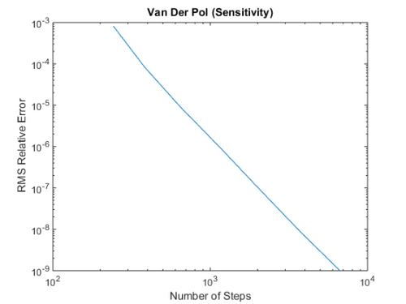
Test Case 3B: MATLODE_ROS_TLM_Integrator
Description: Running MATLODE_ROS_TLM_Integrator with different absolute and relative tolerance values given alternative coefficients.
Option = MATLODE_OPTIONS('Jacobian',Ode_Jacobian,'Y_TLM',eye(max(size(y0))),'Hess_vec',Ode_Hess_vec,'Method',2); [steps, errorSolution, errorSensitivity ] = TEST_General_Sensitivity(@MATLODE_ROS_TLM_Integrator,Ode_Function,Tspan,y0,Option,-10,-4,T_Ref,Y_Ref,Sens_Ref); figure(1); loglog(steps,errorSolution); title('Van Der Pol (Solution)'); ylabel('RMS Relative Error'); xlabel('Number of Steps'); figure(2); loglog(steps,errorSensitivity); title('Van Der Pol (Sensitivity)'); ylabel('RMS Relative Error'); xlabel('Number of Steps');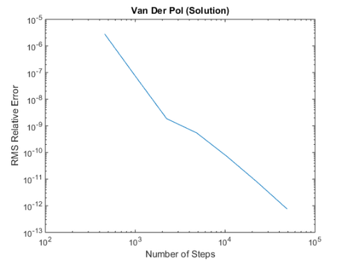 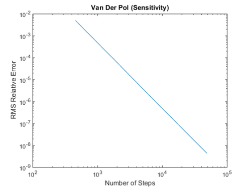
Test Case 4A: MATLODE_SDIRK_TLM_Integrator (Default)
Description: Running MATLODE_SDIRK_TLM_Integrator with different absolute and relative tolerance values given default option struct.
Option = MATLODE_OPTIONS('Jacobian',Ode_Jacobian,'Y_TLM',eye(max(size(y0)))); [steps, errorSolution, errorSensitivity ] = TEST_General_Sensitivity(@MATLODE_SDIRK_TLM_Integrator,Ode_Function,Tspan,y0,Option,-11,-4,T_Ref,Y_Ref,Sens_Ref); figure(1); loglog(steps,errorSolution); title('Van Der Pol (Solution)'); ylabel('RMS Relative Error'); xlabel('Number of Steps'); figure(2); loglog(steps,errorSensitivity); title('Van Der Pol (Sensitivity)'); ylabel('RMS Relative Error'); xlabel('Number of Steps');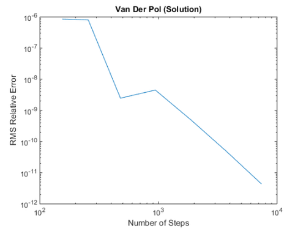 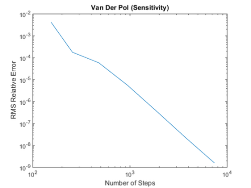
Test Case 4B: MATLODE_SDIRK_TLM_Integrator
Description: Running MATLODE_SDIRK_TLM_Integrator with different absolute and relative tolerance values given alternative coefficients.
Option = MATLODE_OPTIONS('Jacobian',Ode_Jacobian,'Y_TLM',eye(max(size(y0))),'Method',5); [steps, errorSolution, errorSensitivity ] = TEST_General_Sensitivity(@MATLODE_SDIRK_TLM_Integrator,Ode_Function,Tspan,y0,Option,-11,-4,T_Ref,Y_Ref,Sens_Ref); figure(1); loglog(steps,errorSolution); title('Van Der Pol (Solution)'); ylabel('RMS Relative Error'); xlabel('Number of Steps'); figure(2); loglog(steps,errorSensitivity); title('Van Der Pol (Sensitivity)'); ylabel('RMS Relative Error'); xlabel('Number of Steps');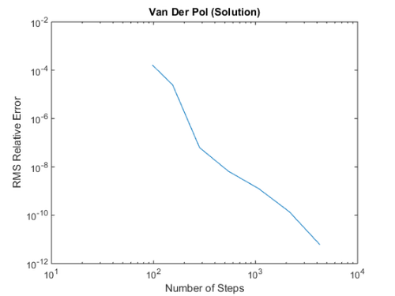 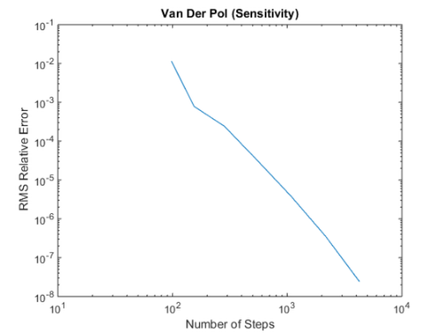
Test Case 4C: MATLODE_SDIRK_TLM_Integrator
Description: Running MATLODE_SDIRK_TLM_Integrator with different absolute and relative tolerance values given nondirect sensitivity analysis.
Option = MATLODE_OPTIONS('Jacobian',Ode_Jacobian,'Y_TLM',eye(max(size(y0))),'DirectTLM',false); [steps, errorSolution, errorSensitivity ] = TEST_General_Sensitivity(@MATLODE_SDIRK_TLM_Integrator,Ode_Function,Tspan,y0,Option,-11,-4,T_Ref,Y_Ref,Sens_Ref); figure(1); loglog(steps,errorSolution); title('Van Der Pol (Solution)'); ylabel('RMS Relative Error'); xlabel('Number of Steps'); figure(2); loglog(steps,errorSensitivity); title('Van Der Pol (Sensitivity)'); ylabel('RMS Relative Error'); xlabel('Number of Steps');
Authored by Tony D'Augustine, Adrian Sandu, and Hong Zhang. Computational Science Laboratory, Virginia Tech. ©2015 Virginia Tech Intellectual Properties, Inc.